Rainy Day - Boat Repair - River Mastallone
L’indecisione è la chiave della flessibilità
|
|
|
Rainy Day - Boat Repair - River Mastallone |
||
|---|---|---|---|---|
|
L’indecisione è la chiave della flessibilità
|
Boat Repair
Some days you just want to stay in the tent...
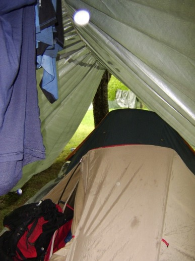
On a seriously miserable morning, the crew spends the morning doing a repair job on Christie's boat, showing off the finest in plastic raingear that the local hardware store had to offer. Simon's propane torch kayak repair world tour makes another emergency response. Like a surgeon, he lays out his tools amid a team of helpers...
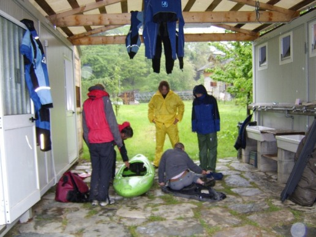
Austin pokes around in there, while Simon prepares to make the first incision...
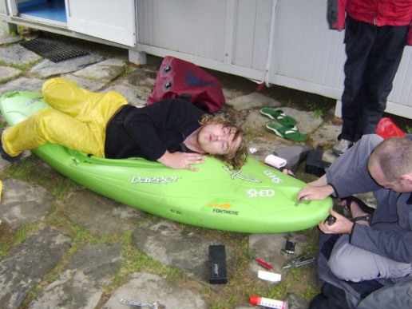
Jim and Christie look on as Austin continues to poke around in there.
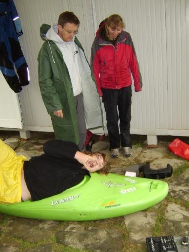
Another successful surgical procedure, with the boat now drilled and gummed with a proprietary mix of roofing felt, trimmed cockpit plastic, and gummy stuff.
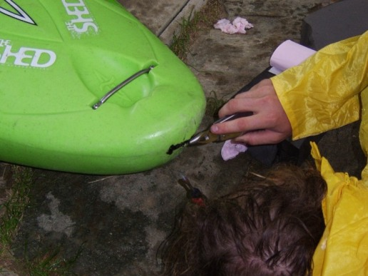
Seriously miserable day - this is Marco, provider of fine coffees and food in the campsite restaurant, sporting a distinguished yellow raincoat. No doubt it's the finest Italian designer plastic mac.
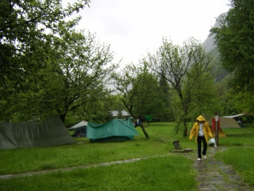
River Mastallone
After leaving a sufficient time for the post-operative boat to recover (about the same amount of time it took to drive to the river), the crew heads out to the River Mastallone.
This day was all about demonstrating to the folks back home that boating in Italy is not always as glamourous as it may have appeared at first. Here�s the crew getting changed in the rain at the side of the road. It really could be Wicklow in November.
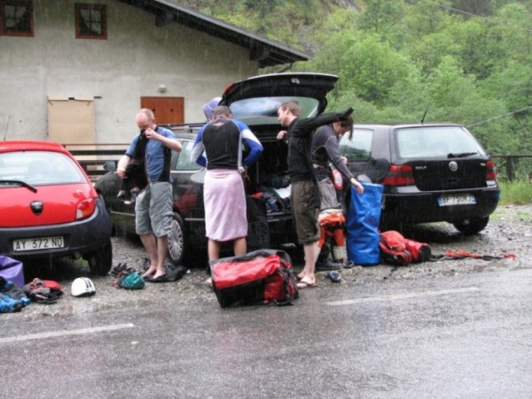
Christie is hoping the repair job is up to standard...
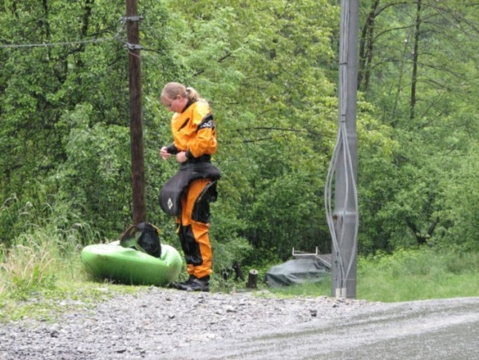
Ash and Ollie; colour-coordinated gear. Aaah...
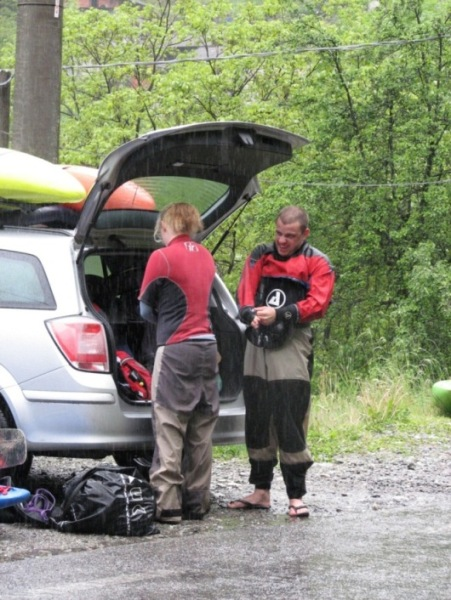
On the opposite end of the sartorial elegance scale from all of Italy, here's Jim, photographically documenting the scene in the dodgiest dirty ol' man raincoat you ever want to see...
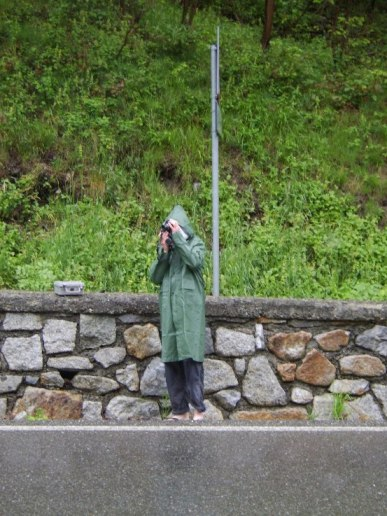
Catherine walks through the field down to the water...
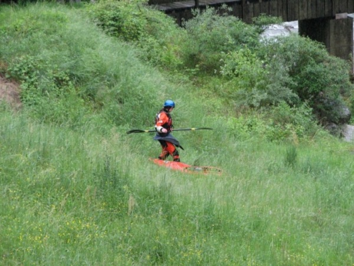
This was the put-on. Sadly, once again, the camera never made it onto the river.
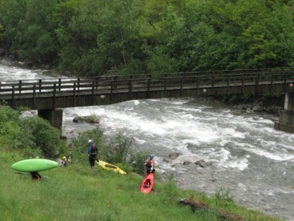
Finally, here's Ollie...
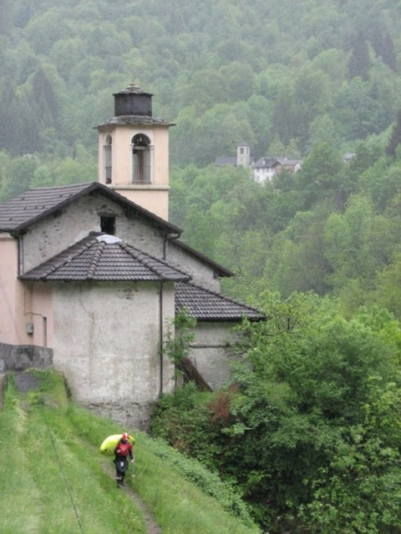